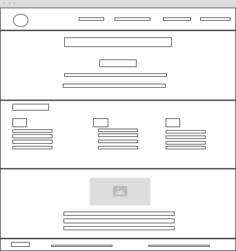
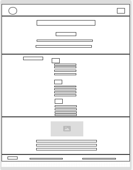

Site Name: Chamber of Commerce of São Paulo
This site name was selected to represent the locale it serves and its purpose as a chamber of commerce.
Site Purpose
- Promoting local businesses and economic growth.
- Providing resources and support for community development.
Scenarios
- What events will the chamber be holding this month that promote business-to-business networking?
- Where can I find contact information for the chamber's board of directors?
- What has been the population growth in the area?
Color Schema
Primary Color: Blue (#336699) - Used for headings, links, and accents.
Secondary Color: Green (#669933) - Used for background elements and accents.
Typography
Primary Font: Roboto - Used for headings and body text.
Secondary Font: Georgia - Used for special sections or elements.
Wireframe
Desktop View:
Mobile View:
